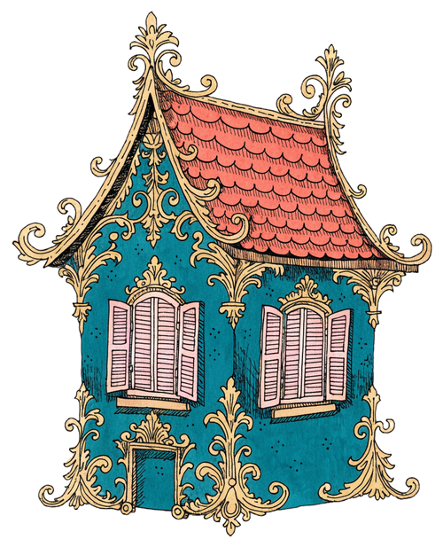
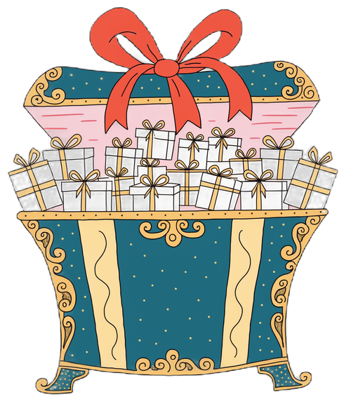

まずは、話を聞くところから。
その場で決めなくて構いません。
ボタンを押すと、入力内容が入った状態でメールソフトが開きます。
内容をご確認のうえ、そのまま送信してください。
開かない場合は RC@n-realize.co.jp までご連絡ください。
ふと、相談。
物件を探している人だけじゃない。
人生を良くしたい人が集まる。
→ 相談のたびに、気づきという贈りものが出てくる。
BEFORE

物件を探しに来る人
AFTER

贈りものを受け取りに来る人
売り込まないから、価格で比べられない。
学びを贈る
気づきを贈る
相談が生まれる
信頼が積み重なる
地域の不動産会社が「人生支援の相談窓口」になる。
LMPはRCを増やせる。RCが増えると人生相談が増える。
相談が増えるほどLMPの価値が高まり、さらにRCが増える仕組み。
RC人生支援プラットフォーム
企業や個人に人生教育を届ける
LMP人生支援営業DXプラットフォーム
地域の相談窓口
自動集客
システム
入口（RC）と出口（LMP）が循環する
RC導入が増える
企業へ人生支援経営を届ける
人生教育で相談が生まれる
人生教育・人生診断・人生設計
LMPが相談を受け止める
地域の相談窓口として提案・実行支援
信頼・成果が積み上がる
顧客満足・実績・紹介
さらにRCが増える
企業・地域へ広がる
1エリア2社限定。
この贈りものは、
先に受け取った1社だけのものになります。
その場で決めなくて構いません。
ボタンを押すと、入力内容が入った状態でメールソフトが開きます。
内容をご確認のうえ、そのまま送信してください。
開かない場合は RC@n-realize.co.jp までご連絡ください。